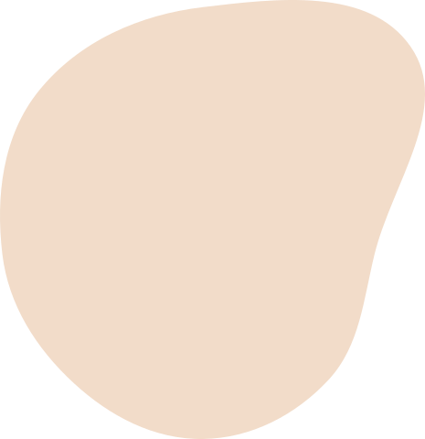

<link rel="stylesheet" href="../../dist/output.css" />
<!-- header -->
<header
  class="xl:mt-4 xl:mb-2 bg-pink-light xl:bg-transparent overflow-hidden xl:overflow-visible"
>
  <div class="container relative mx-auto box-p">
    <div
      class="relative grid grid-cols-4 md:grid-cols-6 xl:grid-cols-12 gap-x-6 xl:gap-x-[30px] pt-6 md:pt-8 md:pb-6 xl:p-0 xl:bg-[#F2B4AE26] xl:rounded-3xl"
    >
      
      
      <div
        class="relative col-span-4 md:col-span-6 xl:col-span-10 xl:col-start-2 grid grid-cols-4 md:grid-cols-6 xl:grid-cols-10 gap-x-6 xl:gap-x-[30px] xl:my-8 md:bg-pink rounded-xl"
      >
        <div
          class="relative xl:-bottom-8 col-span-2 md:col-span-3 xl:col-span-4 col-start-2 xl:col-start-1 -mx-6 md:mx-0 md:mt-8 xl:mt-12 md:pl-6 order-10 md:order-[0]"
        >
          
          
        </div>
        <!-- title & button -->
        <div
          class="col-span-3 xl:col-span-6 flex flex-col justify-center md:pr-6"
        >
          <h2
            class="col-span-2 xl:col-span-4 text-pink-mid md:text-white md:text-[28px] xl:text-5xl font-bold whitespace-nowrap"
          >
            為喵星人，護台灣！
          </h2>
          <p
            class="hidden xl:block col-span-5 mt-2 md:mt-6 text-black xl:tracking-wider leading-[1.6]"
          >
            我堅信，民眾的身心健康與工作熱情是推動經濟的核心動力，藉由推動更完善的貓咪福利和相關政策，同時也為台灣的經濟發展助一臂之力。讓我們一同護航台灣的幸福經濟，從照顧每一隻貓咪開始。
          </p>
          <p
            class="xl:hidden col-span-3 mt-2 md:mt-6 text-black text-xs tracking-widest leading-[1.6]"
          >
            我堅信，推動更完善的貓咪福利政策，同時也為台灣的經濟發展助力。讓我們照顧每一隻貓咪，一同護航台灣的幸福。
          </p>
          <button
            class="btn-goDonate col-span-2 self-start flex justify-center items-center mt-2 md:mt-6 py-2 md:py-3 w-[165px] md:w-[200px] bg-white border xl:border-0 border-black rounded-[6px] text-pink-mid text-xs md:text-sm xl:text-xl font-bold tracking-widest"
          >
            <span>支持喵立翰</span>
            
          </button>
        </div>
        <div
          class="absolute bottom-4 right-4 hidden xl:block col-span-3 col-start-8"
        >
          
        </div>
      </div>
    </div>
  </div>
</header>
